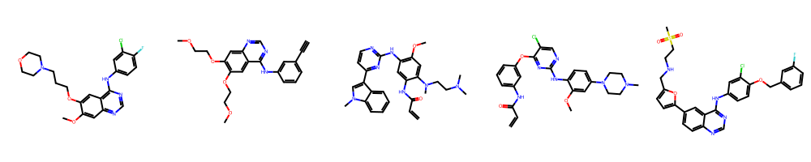

T027 · 激酶相似性：配体谱¶
注： 本教程是 TeachOpenCADD 的一部分。TeachOpenCADD 是一个旨在教授领域专用技能，并提供可作为研究项目起点的流程模板的平台。
作者：
Talia B. Kimber, 2021, Volkamer 实验室, Charité
Dominique Sydow, 2021, Volkamer 实验室, Charité
Andrea Volkamer, 2021, Volkamer 实验室, Charité
本教程的目标¶
本教程的目标是通过配体分析数据（ChEMBL29）研究激酶相似性。在药物设计领域，通常有以下假设：如果两种激酶与相似的化合物结合，那么新设计的化合物也可能会与这两种激酶结合。因此，如果两种激酶共享相似的配体谱，那么它们在配体结合方面可被认为是相似的。
理论 部分内容¶
激酶数据集
生物活性数据
激酶相似性描述符：配体谱
激酶相似性
激酶混杂性
从相似性矩阵到距离矩阵
实践 部分内容¶
定义目标激酶
检索数据
预处理数据
Hit 或非 hit
激酶混杂性
激酶相似性
将相似性可视化为激酶矩阵
保存激酶相似性矩阵
激酶距离矩阵
保存激酶距离矩阵
参考文献¶
ChEMBL 数据库
kinodata（OpenKinome 项目）
[1]:
import sys
if "google.colab" in sys.modules:
%pip install teachopencadd --no-deps -q
!teachopencadd -d 27
%pip uninstall teachopencadd -y -q
%pip install -qr requirements.txt
理论¶
激酶数据集¶
我们使用 教程 T023 中定义的激酶选择。
生物活性数据¶
为了通过配体分析数据测量激酶相似性，我们从著名的 ChEMBL 数据库中检索生物活性数据，查询重点关注人类激酶。
在药物设计中，通常将化合物对目标靶标的活性二值化为”hit”或”non-hit”。实际上，这是通过使用测量活性的截断值来完成的。
激酶相似性描述符：配体谱¶
作为相似性的度量，我们在本教程中使用配体分析数据。
激酶相似性¶
我们使用以下度量作为两个激酶 \(K_i\) 和 \(K_j\) 之间的相似性：
这是 Jaccard/Tanimoto 系数的特殊情况（参见 教程 T004）。
激酶混杂性¶
计算激酶与自身的相似性可解释为激酶混杂性，其中上述相似性表示该激酶中活性化合物占测试化合物的比例。
如果激酶是高度混杂的，即它能够结合许多不同的配体，则与该激酶的自身相似性很高。如果激酶是选择性的，即只与少数配体结合，则自身相似性很低。
从相似性矩阵到距离矩阵¶
如 教程 T024 所述，我们将相似性矩阵转换为距离矩阵。
实践¶
[2]:
from pathlib import Path
from collections import Counter
import pandas as pd
import numpy as np
import seaborn as sns
import matplotlib.pyplot as plt
from rdkit import Chem
from rdkit.Chem import Draw
from rdkit.Chem.Draw import IPythonConsole
[3]:
HERE = Path(_dh[-1])
DATA = HERE / "data"
[4]:
configs = pd.read_csv(DATA / "pipeline_configs.csv")
configs = configs.set_index("variable")["default_value"]
DEMO = bool(int(configs["DEMO"]))
print(f"Run in demo mode: {DEMO}")
# NBVAL_CHECK_OUTPUT
Run in demo mode: True
定义目标激酶¶
加载 教程 T023 中定义的激酶选择。
[5]:
kinase_selection_df = pd.read_csv(DATA / "kinase_selection.csv")
kinase_selection_df
# NBVAL_CHECK_OUTPUT
[5]:
| kinase | kinase_klifs | uniprot_id | group | full_kinase_name | |
|---|---|---|---|---|---|
| 0 | EGFR | EGFR | P00533 | TK | Epidermal growth factor receptor |
| 1 | ErbB2 | ErbB2 | P04626 | TK | Erythroblastic leukemia viral oncogene homolog 2 |
| 2 | PI3K | p110a | P42336 | Atypical | Phosphatidylinositol-3-kinase |
| 3 | VEGFR2 | KDR | P35968 | TK | Vascular endothelial growth factor receptor 2 |
| 4 | BRAF | BRAF | P15056 | TKL | Rapidly accelerated fibrosarcoma isoform B |
| 5 | CDK2 | CDK2 | P24941 | CMGC | Cyclic-dependent kinase 2 |
| 6 | LCK | LCK | P06239 | TK | Lymphocyte-specific protein tyrosine kinase |
| 7 | MET | MET | P08581 | TK | Mesenchymal-epithelial transition factor |
| 8 | p38a | p38a | Q16539 | CMGC | p38 mitogen activated protein kinase alpha |
检索数据¶
我们检索 Openkinome 免费提供的 ChEMBL29 激酶子集的预整理版本，参见 https://github.com/openkinome/kinodata/releases/tag/v0.3。
[6]:
path = "https://github.com/openkinome/kinodata/releases/download/\
v0.3/activities-chembl29_v0.3.zip"
# Load data and reset index so that it starts from 0
data = pd.read_csv(path, index_col=0).reset_index(drop=True)
print(f"Current shape of data: {data.shape}")
data.head()
# NBVAL_CHECK_OUTPUT
Current shape of data: (190634, 16)
[6]:
| activities.activity_id | assays.chembl_id | target_dictionary.chembl_id | molecule_dictionary.chembl_id | molecule_dictionary.max_phase | activities.standard_type | activities.standard_value | activities.standard_units | compound_structures.canonical_smiles | compound_structures.standard_inchi | component_sequences.sequence | assays.confidence_score | docs.chembl_id | docs.year | docs.authors | UniprotID | |
|---|---|---|---|---|---|---|---|---|---|---|---|---|---|---|---|---|
| 0 | 16291323 | CHEMBL3705523 | CHEMBL2973 | CHEMBL3666724 | 0 | pIC50 | 14.096910 | nM | CCCC(=O)Nc1cccc(-c2nc(Nc3ccc4[nH]ncc4c3)c3cc(O... | InChI=1S/C31H33N7O3/c1-2-4-29(40)33-22-6-3-5-2... | MSRPPPTGKMPGAPETAPGDGAGASRQRKLEALIRDPRSPINVESL... | 9 | CHEMBL3639077 | 2014.0 | NaN | O75116 |
| 1 | 16264754 | CHEMBL3705523 | CHEMBL2973 | CHEMBL3666728 | 0 | pIC50 | 14.000000 | nM | CCCC(=O)Nc1cccc(-c2nc(Nc3ccc4[nH]ncc4c3)c3cc(O... | InChI=1S/C34H40N8O3/c1-5-7-32(43)36-24-9-6-8-2... | MSRPPPTGKMPGAPETAPGDGAGASRQRKLEALIRDPRSPINVESL... | 9 | CHEMBL3639077 | 2014.0 | NaN | O75116 |
| 2 | 16306943 | CHEMBL3705523 | CHEMBL2973 | CHEMBL1968705 | 0 | pIC50 | 14.000000 | nM | CCCC(=O)Nc1cccc(-c2nc(Nc3ccc4[nH]ncc4c3)c3cc(O... | InChI=1S/C31H33N7O2/c1-2-6-29(39)33-23-8-5-7-2... | MSRPPPTGKMPGAPETAPGDGAGASRQRKLEALIRDPRSPINVESL... | 9 | CHEMBL3639077 | 2014.0 | NaN | O75116 |
| 3 | 16340050 | CHEMBL3705523 | CHEMBL2973 | CHEMBL1997433 | 0 | pIC50 | 13.958607 | nM | CCCC(=O)Nc1cccc(-c2nc(Nc3ccc4[nH]ncc4c3)c3cc(O... | InChI=1S/C28H28N6O3/c1-3-5-26(35)30-20-7-4-6-1... | MSRPPPTGKMPGAPETAPGDGAGASRQRKLEALIRDPRSPINVESL... | 9 | CHEMBL3639077 | 2014.0 | NaN | O75116 |
| 4 | 16287186 | CHEMBL3705523 | CHEMBL2973 | CHEMBL3666721 | 0 | pIC50 | 13.920819 | nM | CCCC(=O)Nc1cccc(-c2nc(Nc3ccc4[nH]ncc4c3)c3cc(O... | InChI=1S/C32H35N7O2/c1-2-7-30(40)34-24-9-6-8-2... | MSRPPPTGKMPGAPETAPGDGAGASRQRKLEALIRDPRSPINVESL... | 9 | CHEMBL3639077 | 2014.0 | NaN | O75116 |
预处理数据¶
我们查看活性类型和关联的单位。
[7]:
print(
f"Activities: {sorted(set(data['activities.standard_type']))}\n"
f"Units: {set(data['activities.standard_units'])}"
)
Activities: ['pIC50', 'pKd', 'pKi']
Units: {'nM'}
我们仅保留具有 pIC50 值的条目。
[8]:
data = data[data["activities.standard_type"] == "pIC50"]
[9]:
data.columns
# NBVAL_CHECK_OUTPUT
[9]:
Index(['activities.activity_id', 'assays.chembl_id',
'target_dictionary.chembl_id', 'molecule_dictionary.chembl_id',
'molecule_dictionary.max_phase', 'activities.standard_type',
'activities.standard_value', 'activities.standard_units',
'compound_structures.canonical_smiles',
'compound_structures.standard_inchi', 'component_sequences.sequence',
'assays.confidence_score', 'docs.chembl_id', 'docs.year',
'docs.authors', 'UniprotID'],
dtype='str')
DataFrame 包含许多对本 notebook 后续部分不必要的列，因此将其删除。只保留相关信息，即化合物的规范 SMILES（canonical_smiles）、靶标基因名（target_genesymbol）、标准类型（standard_type）和标准值（standard_value）。
[10]:
data = data[["compound_structures.canonical_smiles", "activities.standard_value", "UniprotID"]]
data = data.rename(
columns={
"compound_structures.canonical_smiles": "smiles",
"activities.standard_value": "pIC50",
}
)
[11]:
print(f"Current shape of data: {data.shape}")
data.head()
# NBVAL_CHECK_OUTPUT
Current shape of data: (160857, 3)
[11]:
| smiles | pIC50 | UniprotID | |
|---|---|---|---|
| 0 | CCCC(=O)Nc1cccc(-c2nc(Nc3ccc4[nH]ncc4c3)c3cc(O... | 14.096910 | O75116 |
| 1 | CCCC(=O)Nc1cccc(-c2nc(Nc3ccc4[nH]ncc4c3)c3cc(O... | 14.000000 | O75116 |
| 2 | CCCC(=O)Nc1cccc(-c2nc(Nc3ccc4[nH]ncc4c3)c3cc(O... | 14.000000 | O75116 |
| 3 | CCCC(=O)Nc1cccc(-c2nc(Nc3ccc4[nH]ncc4c3)c3cc(O... | 13.958607 | O75116 |
| 4 | CCCC(=O)Nc1cccc(-c2nc(Nc3ccc4[nH]ncc4c3)c3cc(O... | 13.920819 | O75116 |
丢弃 NA 值。
[12]:
data = data.dropna()
print(f"Current shape of data: {data.shape}")
# NBVAL_CHECK_OUTPUT
Current shape of data: (160703, 3)
我们只保留查询激酶的数据：
[13]:
data = data[data["UniprotID"].isin(kinase_selection_df["uniprot_id"])]
print(f"Current shape of data: {data.shape}")
data.head()
# NBVAL_CHECK_OUTPUT
Current shape of data: (33427, 3)
[13]:
| smiles | pIC50 | UniprotID | |
|---|---|---|---|
| 58 | Brc1cccc(Nc2ncnc3cc4ccccc4cc23)c1 | 11.522879 | P00533 |
| 98 | CN(C)c1cc2c(Nc3cccc(Br)c3)ncnc2cn1 | 11.221849 | P00533 |
| 99 | CCOc1cc2ncnc(Nc3cccc(Br)c3)c2cc1OCC | 11.221849 | P00533 |
| 140 | CNc1cc2c(Nc3cccc(Br)c3)ncnc2cn1 | 11.096910 | P00533 |
| 141 | Brc1cccc(Nc2ncnc3cc4[nH]cnc4cc23)c1 | 11.096910 | P00533 |
让我们查看示例数据（对应于激酶选择 DataFrame 中的第一行）：
[14]:
example_kinase = kinase_selection_df["kinase_klifs"][0]
example_uniprot = kinase_selection_df["uniprot_id"][0]
example_data = data[data["UniprotID"] == example_uniprot]
print(f"Example kinase: {example_kinase}")
Example kinase: EGFR
某些化合物已对同一靶标进行了多次测试，如下所示。
[15]:
measured_compounds = Counter(example_data["smiles"])
try:
top_measured_compounds = measured_compounds.most_common()[0:5]
except IndexError:
top_measured_compounds = measured_compounds.most_common()
top_measured_compounds
# NBVAL_CHECK_OUTPUT
[15]:
[('COc1cc2ncnc(Nc3ccc(F)c(Cl)c3)c2cc1OCCCN1CCOCC1', 39),
('C#Cc1cccc(Nc2ncnc3cc(OCCOC)c(OCCOC)cc23)c1', 27),
('C=CC(=O)Nc1cc(Nc2nccc(-c3cn(C)c4ccccc34)n2)c(OC)cc1N(C)CCN(C)C', 15),
('C=CC(=O)Nc1cccc(Oc2nc(Nc3ccc(N4CCN(C)CC4)cc3OC)ncc2Cl)c1', 11),
('CS(=O)(=O)CCNCc1ccc(-c2ccc3ncnc(Nc4ccc(OCc5cccc(F)c5)c(Cl)c4)c3c2)o1', 8)]
我们来看一下这些化合物。
[16]:
mols = []
for entry in top_measured_compounds:
mols.append(Chem.MolFromSmiles(entry[0]))
Draw.MolsToGridImage(mols, molsPerRow=5)
[16]:

在此示例（演示模式）中，第一个分子是吉非替尼（gefitinib），一种已知的 FDA 批准的 EGFR 靶向药物。
作为简单的解决方案——因为我们更倾向于每个化合物-激酶对有一个活性值——我们保留该化合物活性值最好的值，即最高的 pIC50 值。
[17]:
data = data.groupby(["UniprotID", "smiles"])["pIC50"].max().reset_index()
data.head()
# NBVAL_CHECK_OUTPUT
[17]:
| UniprotID | smiles | pIC50 | |
|---|---|---|---|
| 0 | P00533 | Br.CC(Nc1ncnc2[nH]c(-c3ccc(O)cc3)cc12)c1ccc(C(... | 5.336488 |
| 1 | P00533 | Br.CC(Nc1ncnc2[nH]c(-c3ccc(O)cc3)cc12)c1cccc2c... | 5.996539 |
| 2 | P00533 | Br.CC[C@@H](Nc1ncnc2[nH]c(-c3ccc(O)cc3)cc12)c1... | 8.397940 |
| 3 | P00533 | Br.C[C@@H](Nc1ncnc2[nH]c(-c3ccc(O)cc3)cc12)c1c... | 7.207608 |
| 4 | P00533 | Br.C[C@@H](Nc1ncnc2[nH]c(-c3ccc(O)cc3)cc12)c1c... | 8.420216 |
Hit 或非 hit¶
最后，我们使用截断值将 pIC50 值二值化为 hit 或 non-hit。我们使用 pIC50 截断值 6.3，与 Molecules (2021), 26(3), 629 中使用的截断值类似。
Finally, we binarize the pIC50 values to obtain hit or non-hit using a cutoff. We use a pIC50 cutoff of \(6.3\), similarly to the cutoff used in Molecules (2021), 26(3), 629.
[18]:
cutoff = 6.3
[19]:
def binarize_pic50(pic50_value, threshold):
"""
Binarizes a scalar value given a threshold.
Parameters
----------
pic50_value : float
The measurement pIC50 value of a kinase-ligand pair.
threshold : float
The cutoff to determine activity.
Returns
-------
int
1 if the pIC50 value is above the threshold, which indicates activity.
0 otherwise.
"""
if pic50_value >= threshold:
return 1
else:
return 0
[20]:
data["activity_binary"] = data["pIC50"].apply(binarize_pic50, args=(cutoff,))
[21]:
print(f"Current shape of data: {data.shape}")
data.head()
# NBVAL_CHECK_OUTPUT
Current shape of data: (32916, 4)
[21]:
| UniprotID | smiles | pIC50 | activity_binary | |
|---|---|---|---|---|
| 0 | P00533 | Br.CC(Nc1ncnc2[nH]c(-c3ccc(O)cc3)cc12)c1ccc(C(... | 5.336488 | 0 |
| 1 | P00533 | Br.CC(Nc1ncnc2[nH]c(-c3ccc(O)cc3)cc12)c1cccc2c... | 5.996539 | 0 |
| 2 | P00533 | Br.CC[C@@H](Nc1ncnc2[nH]c(-c3ccc(O)cc3)cc12)c1... | 8.397940 | 1 |
| 3 | P00533 | Br.C[C@@H](Nc1ncnc2[nH]c(-c3ccc(O)cc3)cc12)c1c... | 7.207608 | 1 |
| 4 | P00533 | Br.C[C@@H](Nc1ncnc2[nH]c(-c3ccc(O)cc3)cc12)c1c... | 8.420216 | 1 |
激酶混杂性¶
现在我们来查看激酶的混杂性。
对于给定的激酶，计算三个值：
对该激酶进行过测试的化合物总数，
对该激酶有活性的化合物数量，
前两个值的比值：激酶混杂性。
We now look at the kinase promiscuity.
For a given kinase, three values are computed:
the total number of measured compounds against the given kinase,
the number of active compounds against the kinase, and
the fraction of active compounds, i.e., the ratio of active compounds over the total number of measured compounds per kinase.
[22]:
def kinase_to_activity_numbers(uniprot_id, activity_df):
"""
Retrieve the three values for a given kinase.
Parameters
----------
uniprot_id : str
The UniProt ID of the kinase of interest, e.g. "P00533" for "EGFR".
activity_df : pd.DataFrame
The dataframe with activity values for kinases.
Returns
-------
tuple : (int, int, float)
The three metrics:
1. The total number of measured compounds against the kinase.
2. The number of active compounds against the kinase.
3. The fraction of active compounds against the kinase.
"""
kinase_data = activity_df[activity_df["UniprotID"] == uniprot_id]
total_measured_compounds = len(kinase_data)
active_compounds = len(kinase_data[kinase_data["activity_binary"] == 1])
if total_measured_compounds > 0:
fraction = active_compounds / total_measured_compounds
else:
print("No compounds were measured for this kinase.")
fraction = np.nan
return (total_measured_compounds, active_compounds, fraction)
让我们看看数据集中第一个激酶获得了哪些信息：
[23]:
example_kinase = kinase_selection_df["kinase_klifs"][0]
example_uniprot = kinase_selection_df["uniprot_id"][0]
print(f"{example_kinase} ({example_uniprot}):")
example_metrics = kinase_to_activity_numbers(example_uniprot, data)
print(
f"{'Total number of measured compounds:' : <40}"
f"{example_metrics[0]} \n"
f"{'Number of active compounds:' : <40}"
f"{example_metrics[1]} \n"
f"{'Fraction of active compounds:' : <40}"
f"{example_metrics[2]:.2f} \n"
)
# NBVAL_CHECK_OUTPUT
EGFR (P00533):
Total number of measured compounds: 5965
Number of active compounds: 3635
Fraction of active compounds: 0.61
让我们为所有激酶创建一个包含这些值的表格：
[24]:
def promiscuity_table(kinase_selection, activity_df):
"""
Create a table with all three values for all kinases.
Parameters
----------
kinase_selection : pd.DataFrame
The DataFrame for the chosen kinases.
activity_df : pd.DataFrame
The DataFrame with activity values for kinases.
Returns
-------
promiscuity_table : pd.DataFrame
A DataFrame with the kinases as rows and values as columns.
"""
promiscuity_table = pd.DataFrame(
index=kinase_selection["kinase_klifs"], columns=["total", "actives", "fraction"]
)
promiscuity_table.index.name = None
promiscuity_table.columns.name = None
for name, uniprot_id in zip(kinase_selection["kinase_klifs"], kinase_selection["uniprot_id"]):
values = kinase_to_activity_numbers(uniprot_id, activity_df)
promiscuity_table.loc[name] = values
return promiscuity_table
[25]:
kinase_promiscuity_df = promiscuity_table(kinase_selection_df, data)
kinase_promiscuity_df
# NBVAL_CHECK_OUTPUT
[25]:
| total | actives | fraction | |
|---|---|---|---|
| EGFR | 5965 | 3635 | 0.609388 |
| ErbB2 | 1700 | 1031 | 0.606471 |
| p110a | 4393 | 2827 | 0.643524 |
| KDR | 7641 | 5328 | 0.697291 |
| BRAF | 3688 | 2992 | 0.81128 |
| CDK2 | 1500 | 815 | 0.543333 |
| LCK | 1560 | 935 | 0.599359 |
| MET | 2832 | 2248 | 0.793785 |
| p38a | 3637 | 2778 | 0.763816 |
美化表格：
[26]:
kinase_promiscuity_df.style.format("{:.3f}", subset=["fraction"]).background_gradient(
cmap="Purples", subset=["fraction"]
).highlight_min(color="yellow", axis=None, subset=["fraction"]).highlight_max(
color="red", subset=["fraction"]
)
[26]:
| total | actives | fraction | |
|---|---|---|---|
| EGFR | 5965 | 3635 | 0.609 |
| ErbB2 | 1700 | 1031 | 0.606 |
| p110a | 4393 | 2827 | 0.644 |
| KDR | 7641 | 5328 | 0.697 |
| BRAF | 3688 | 2992 | 0.811 |
| CDK2 | 1500 | 815 | 0.543 |
| LCK | 1560 | 935 | 0.599 |
| MET | 2832 | 2248 | 0.794 |
| p38a | 3637 | 2778 | 0.764 |
从表格中可以看出，CDK2 是混杂性最低的激酶（黄色），而 BRAF 是混杂性最高的激酶（红色）。
注意：如果某个激酶只测试了很少的化合物，混杂性分数可能会产生偏差。
激酶相似性¶
现在我们研究如何使用_理论_部分讨论的相似性度量来比较激酶。
[27]:
def similarity_ligand_profile(uniprot_id1, uniprot_id2, activity_df):
"""
Compute the similarity between two kinases using ligand profiling data.
Parameters
----------
uniprot_id1 : str
UniProt ID of first kinase of interest.
uniprot_id2 : str
UniProt ID of second kinase of interest.
activity_df : pd.DataFrame
The DataFrame with activity values for kinases.
Returns
-------
tuple : (int, int, float)
The three metrics:
1. The total number of measured compounds against both kinases.
2. The number of active compounds against both kinases.
3. The metric for kinase similarity,
i.e. number of active compounds on both kinases
over number of measured compounds on both kinases.
"""
if uniprot_id1 == uniprot_id2:
return kinase_to_activity_numbers(uniprot_id1, activity_df)
else:
# Data for the two kinases only
reduced_data = activity_df[activity_df["UniprotID"].isin([uniprot_id1, uniprot_id2])]
# Look at active compounds only
active_entries = reduced_data[reduced_data["activity_binary"] == 1]
# Group by compounds
compounds = active_entries.groupby("smiles").size()
# Look at the number of active compounds measured on both kinases
active_compounds_on_both = compounds[compounds == 2].shape[0]
# Look at all tested compounds
compounds = reduced_data.groupby("smiles").size()
# Look at the number of compounds measured on both kinases
measured_compounds_on_both = compounds[compounds == 2].shape[0]
if measured_compounds_on_both > 0:
fraction = active_compounds_on_both / measured_compounds_on_both
else:
print(
f"No compounds were measured on both kinases, "
f"namely {uniprot_id1} and {uniprot_id2}."
)
fraction = np.nan
measured_compounds_on_both = np.nan
active_compounds_on_both = np.nan
return (measured_compounds_on_both, active_compounds_on_both, fraction)
让我们查看两个激酶之间的值和相似性。
[28]:
if DEMO:
kinase1 = "EGFR"
uniprot1 = "P00533"
kinase2 = "MET"
uniprot2 = "P08581"
else:
kinase1 = kinase_selection_df["kinase_klifs"][0]
uniprot1 = kinase_selection_df["uniprot_id"][0]
kinase2 = kinase_selection_df["kinase_klifs"][1]
uniprot2 = kinase_selection_df["uniprot_id"][1]
similarity_example = similarity_ligand_profile(uniprot1, uniprot2, data)
print(
f"Values for {kinase1} and {kinase2}: \n\n"
f"{'Total number of measured compounds:' : <50}"
f"{similarity_example[0]} \n"
f"{'Number of active compounds:' : <50}"
f"{similarity_example[1]} \n"
f"Fraction of active compounds or \n"
f"{'ligand profile similarity:' : <50}"
f"{similarity_example[2]:.2f} \n"
)
# NBVAL_CHECK_OUTPUT
Values for EGFR and MET:
Total number of measured compounds: 92
Number of active compounds: 21
Fraction of active compounds or
ligand profile similarity: 0.23
将相似性可视化为激酶矩阵¶
让我们首先查看非约简的比率（活性化合物数占活跃化合物总数的比例），以了解计数情况。
[29]:
kinase_counts_matrix = pd.DataFrame(
index=kinase_selection_df.kinase_klifs, columns=kinase_selection_df.kinase_klifs
)
kinase_counts_matrix.index.name = None
kinase_counts_matrix.columns.name = None
for i, (uniprot_id1, klifs_name1) in enumerate(
zip(kinase_selection_df.uniprot_id, kinase_selection_df.kinase_klifs)
):
for j, (uniprot_id2, klifs_name2) in enumerate(
zip(kinase_selection_df.uniprot_id, kinase_selection_df.kinase_klifs)
):
total, actives, _ = similarity_ligand_profile(uniprot_id1, uniprot_id2, data)
integer_ratio = f"{actives}/{total}"
kinase_counts_matrix.loc[klifs_name1, klifs_name2] = integer_ratio
kinase_counts_matrix
# NBVAL_CHECK_OUTPUT
No compounds were measured on both kinases, namely P04626 and P42336.
No compounds were measured on both kinases, namely P42336 and P04626.
[29]:
| EGFR | ErbB2 | p110a | KDR | BRAF | CDK2 | LCK | MET | p38a | |
|---|---|---|---|---|---|---|---|---|---|
| EGFR | 3635/5965 | 662/1170 | 13/179 | 313/893 | 27/59 | 5/40 | 31/126 | 21/92 | 18/52 |
| ErbB2 | 662/1170 | 1031/1700 | nan/nan | 72/180 | 4/16 | 4/27 | 5/33 | 1/28 | 2/16 |
| p110a | 13/179 | nan/nan | 2827/4393 | 32/174 | 1/3 | 4/12 | 0/3 | 0/1 | 0/5 |
| KDR | 313/893 | 72/180 | 32/174 | 5328/7641 | 199/262 | 71/115 | 179/413 | 184/340 | 63/122 |
| BRAF | 27/59 | 4/16 | 1/3 | 199/262 | 2992/3688 | 1/13 | 22/40 | 3/26 | 29/41 |
| CDK2 | 5/40 | 4/27 | 4/12 | 71/115 | 1/13 | 815/1500 | 2/18 | 2/22 | 1/9 |
| LCK | 31/126 | 5/33 | 0/3 | 179/413 | 22/40 | 2/18 | 935/1560 | 17/63 | 69/138 |
| MET | 21/92 | 1/28 | 0/1 | 184/340 | 3/26 | 2/22 | 17/63 | 2248/2832 | 1/20 |
| p38a | 18/52 | 2/16 | 0/5 | 63/122 | 29/41 | 1/9 | 69/138 | 1/20 | 2778/3637 |
请注意，对两种激酶进行过测试的化合物总数以及活性化合物数量存在很大差异。
对于 p110a-ErbB2 对，没有共同测试的化合物。
对于 p110a 和 [BRAF, CDK2, LCK, MET, KDR] 对，只有很少的共同测试化合物。
对于密切相关的激酶（例如 EGFR 和 ErbB2、CDK2 和 CDK4、IGF1R 和 INSR），有许多共同测试的化合物。
现在让我们来看相似性，即约简后的比率：
[30]:
kinase_similarity_matrix = np.zeros((len(kinase_selection_df), len(kinase_selection_df)))
for i, uniprot_id1 in enumerate(kinase_selection_df.uniprot_id):
for j, uniprot_id2 in enumerate(kinase_selection_df.uniprot_id):
kinase_similarity_matrix[i, j] = similarity_ligand_profile(uniprot_id1, uniprot_id2, data)[
2
]
No compounds were measured on both kinases, namely P04626 and P42336.
No compounds were measured on both kinases, namely P42336 and P04626.
[31]:
kinase_similarity_matrix_df = pd.DataFrame(
data=kinase_similarity_matrix,
index=kinase_selection_df.kinase_klifs,
columns=kinase_selection_df.kinase_klifs,
)
kinase_similarity_matrix_df.index.name = None
kinase_similarity_matrix_df.columns.name = None
kinase_similarity_matrix_df
# NBVAL_CHECK_OUTPUT
[31]:
| EGFR | ErbB2 | p110a | KDR | BRAF | CDK2 | LCK | MET | p38a | |
|---|---|---|---|---|---|---|---|---|---|
| EGFR | 0.609388 | 0.565812 | 0.072626 | 0.350504 | 0.457627 | 0.125000 | 0.246032 | 0.228261 | 0.346154 |
| ErbB2 | 0.565812 | 0.606471 | NaN | 0.400000 | 0.250000 | 0.148148 | 0.151515 | 0.035714 | 0.125000 |
| p110a | 0.072626 | NaN | 0.643524 | 0.183908 | 0.333333 | 0.333333 | 0.000000 | 0.000000 | 0.000000 |
| KDR | 0.350504 | 0.400000 | 0.183908 | 0.697291 | 0.759542 | 0.617391 | 0.433414 | 0.541176 | 0.516393 |
| BRAF | 0.457627 | 0.250000 | 0.333333 | 0.759542 | 0.811280 | 0.076923 | 0.550000 | 0.115385 | 0.707317 |
| CDK2 | 0.125000 | 0.148148 | 0.333333 | 0.617391 | 0.076923 | 0.543333 | 0.111111 | 0.090909 | 0.111111 |
| LCK | 0.246032 | 0.151515 | 0.000000 | 0.433414 | 0.550000 | 0.111111 | 0.599359 | 0.269841 | 0.500000 |
| MET | 0.228261 | 0.035714 | 0.000000 | 0.541176 | 0.115385 | 0.090909 | 0.269841 | 0.793785 | 0.050000 |
| p38a | 0.346154 | 0.125000 | 0.000000 | 0.516393 | 0.707317 | 0.111111 | 0.500000 | 0.050000 | 0.763816 |
[32]:
# Show matrix with background gradient
cm = sns.light_palette("green", as_cmap=True)
kinase_similarity_matrix_df.style.background_gradient(cmap=cm).format("{:.3f}")
[32]:
| EGFR | ErbB2 | p110a | KDR | BRAF | CDK2 | LCK | MET | p38a | |
|---|---|---|---|---|---|---|---|---|---|
| EGFR | 0.609 | 0.566 | 0.073 | 0.351 | 0.458 | 0.125 | 0.246 | 0.228 | 0.346 |
| ErbB2 | 0.566 | 0.606 | nan | 0.400 | 0.250 | 0.148 | 0.152 | 0.036 | 0.125 |
| p110a | 0.073 | nan | 0.644 | 0.184 | 0.333 | 0.333 | 0.000 | 0.000 | 0.000 |
| KDR | 0.351 | 0.400 | 0.184 | 0.697 | 0.760 | 0.617 | 0.433 | 0.541 | 0.516 |
| BRAF | 0.458 | 0.250 | 0.333 | 0.760 | 0.811 | 0.077 | 0.550 | 0.115 | 0.707 |
| CDK2 | 0.125 | 0.148 | 0.333 | 0.617 | 0.077 | 0.543 | 0.111 | 0.091 | 0.111 |
| LCK | 0.246 | 0.152 | 0.000 | 0.433 | 0.550 | 0.111 | 0.599 | 0.270 | 0.500 |
| MET | 0.228 | 0.036 | 0.000 | 0.541 | 0.115 | 0.091 | 0.270 | 0.794 | 0.050 |
| p38a | 0.346 | 0.125 | 0.000 | 0.516 | 0.707 | 0.111 | 0.500 | 0.050 | 0.764 |
注意，对角线包含之前讨论过的混杂性值。
如上所述，ErbB2 和 p110a 之间没有共同测试的化合物，因此产生了一个 np.nan 条目，在后续分析中可以忽略。
[33]:
kinase_similarity_matrix_df = kinase_similarity_matrix_df.fillna(0)
kinase_similarity_matrix_df.style.background_gradient(cmap=cm).format("{:.3f}")
[33]:
| EGFR | ErbB2 | p110a | KDR | BRAF | CDK2 | LCK | MET | p38a | |
|---|---|---|---|---|---|---|---|---|---|
| EGFR | 0.609 | 0.566 | 0.073 | 0.351 | 0.458 | 0.125 | 0.246 | 0.228 | 0.346 |
| ErbB2 | 0.566 | 0.606 | 0.000 | 0.400 | 0.250 | 0.148 | 0.152 | 0.036 | 0.125 |
| p110a | 0.073 | 0.000 | 0.644 | 0.184 | 0.333 | 0.333 | 0.000 | 0.000 | 0.000 |
| KDR | 0.351 | 0.400 | 0.184 | 0.697 | 0.760 | 0.617 | 0.433 | 0.541 | 0.516 |
| BRAF | 0.458 | 0.250 | 0.333 | 0.760 | 0.811 | 0.077 | 0.550 | 0.115 | 0.707 |
| CDK2 | 0.125 | 0.148 | 0.333 | 0.617 | 0.077 | 0.543 | 0.111 | 0.091 | 0.111 |
| LCK | 0.246 | 0.152 | 0.000 | 0.433 | 0.550 | 0.111 | 0.599 | 0.270 | 0.500 |
| MET | 0.228 | 0.036 | 0.000 | 0.541 | 0.115 | 0.091 | 0.270 | 0.794 | 0.050 |
| p38a | 0.346 | 0.125 | 0.000 | 0.516 | 0.707 | 0.111 | 0.500 | 0.050 | 0.764 |
保存激酶相似性矩阵¶
[34]:
kinase_similarity_matrix_df.to_csv(DATA / "kinase_similarity_matrix.csv")
激酶距离矩阵¶
相似性矩阵 \(SM\) 被转换为伪距离矩阵（相似性矩阵的所有条目都在 0 和 1 之间）：
[35]:
print(
f"The values of the similarity matrix lie between: "
f"{kinase_similarity_matrix_df.min().min():.2f}"
f" and {kinase_similarity_matrix_df.max().max():.2f}"
)
# NBVAL_CHECK_OUTPUT
The values of the similarity matrix lie between: 0.00 and 0.81
[36]:
kinase_distance_matrix_df = 1 - kinase_similarity_matrix_df
最后，我们将对角线值设为 0，得到激酶距离矩阵：
[37]:
# np.fill_diagonal(kinase_distance_matrix_df.values, 0) # read-only error
# safe assignment
for i in range(len(kinase_distance_matrix_df)):
kinase_distance_matrix_df.iloc[i, i] = 0
[38]:
kinase_distance_matrix_df.style.background_gradient(cmap=cm).format("{:.3f}")
[38]:
| EGFR | ErbB2 | p110a | KDR | BRAF | CDK2 | LCK | MET | p38a | |
|---|---|---|---|---|---|---|---|---|---|
| EGFR | 0.000 | 0.434 | 0.927 | 0.649 | 0.542 | 0.875 | 0.754 | 0.772 | 0.654 |
| ErbB2 | 0.434 | 0.000 | 1.000 | 0.600 | 0.750 | 0.852 | 0.848 | 0.964 | 0.875 |
| p110a | 0.927 | 1.000 | 0.000 | 0.816 | 0.667 | 0.667 | 1.000 | 1.000 | 1.000 |
| KDR | 0.649 | 0.600 | 0.816 | 0.000 | 0.240 | 0.383 | 0.567 | 0.459 | 0.484 |
| BRAF | 0.542 | 0.750 | 0.667 | 0.240 | 0.000 | 0.923 | 0.450 | 0.885 | 0.293 |
| CDK2 | 0.875 | 0.852 | 0.667 | 0.383 | 0.923 | 0.000 | 0.889 | 0.909 | 0.889 |
| LCK | 0.754 | 0.848 | 1.000 | 0.567 | 0.450 | 0.889 | 0.000 | 0.730 | 0.500 |
| MET | 0.772 | 0.964 | 1.000 | 0.459 | 0.885 | 0.909 | 0.730 | 0.000 | 0.950 |
| p38a | 0.654 | 0.875 | 1.000 | 0.484 | 0.293 | 0.889 | 0.500 | 0.950 | 0.000 |
保存激酶距离矩阵¶
[39]:
kinase_distance_matrix_df.to_csv(DATA / "kinase_distance_matrix.csv")
讨论¶
在本教程中，我们研究了如何将活性数据用作激酶之间相似性的度量。在对两种激酶进行过测试的化合物中活性化合物的比例被用作相似性得分。该相似性矩阵将在 教程 T028 中进一步讨论。
一个重要的警告：由于缺少共同测试的化合物，某些激酶对无法进行比较。这可能发生在属于不同激酶家族的激酶上。在这种情况下，可以考虑使用其他激酶相似性度量。
测验¶
处理多次激酶-配体测量有最佳方法吗？
如果一种激酶已针对许多化合物进行了测试，而另一种激酶仅针对少量化合物进行了测试，它们的混杂性是否可以公平地比较？
在哪些情况下，基于配体谱的激酶相似性比基于序列的激酶相似性更可取？